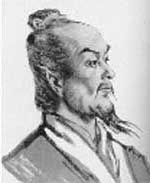

Çinli astronom, şair ve matematikçi Zhang Heng (78-139) dünyanın ilk sismografını icat ederek yaşadığı süre içinde büyük bir ün kazanmıştır. Bu alet, uzaktaki depremlerin bile tam yerinin tespit edilmesine imkan sağlıyordu. Depremlerin yaygın olduğu Çin’de, sismograf önemli bir ihtiyacı karşıladı. Bronz sismograf, yetkilileri yaşanan depremlerden haberdar ediyor ve böylece onlar da ihtiyaç duyulan bölgelere yardım gönderebiliyorlardı.

Ünlü bir hikayeye göre 138 yılının Şubat ayında sismograf bir sarsıntı algıladı. Ne var ki başkent Luoyang’ta kimse bir şey hissetmemişti. Zhang Heng’e şüpheci yaklaşanlar aletin uyarısının yanlış bir alarm olduğundan emindiler. Birkaç gün sonra 563 km uzaktan gelen haberciler yıkıcı bir deprem yaşandığını söylediler.
Zhang Heng yazdığı şiirlerle de tanınmaktadır. Bu şiirler günümüzde hâlâ Çin şiir antolojilerinde yer almaktadır. Zhang Heng aynı zamanda üç boyutlu bir evren modeli tasarlamış ve onun döneminde yaşayan hiçbir Çinli bilginin yapamadığı kadar isabetli bir şekilde pi sayısını hesaplamıştır.
Zhang Heng seçkin bir ailenin çocuğu olarak Orta Çin’deki Xi şehrinde dünyaya geldi. On yedi yaşındayken Çin’i gezmeye başladı. Bu seyahati sırasında yaptığı gözlemleri, en bilinen iki şiirinde dile getirdi. 103 yılında önemsiz bir memuriyete atandı. Bu sırada şiir yazıp matematik ve astronomi çalışmaya başladı.
İmparator An (94-125) 111 yılında Zhang Heng’i terfi ettirdi. Onu başkente çağırdı ve saray astronomu yaptı. Bu, imparatorluktaki en önemli görevlerden biriydi. Zhang Heng’in görevleri arasında hava ve deprem kayıtlarını tutmak, takvim derlemek, tutulma ve diğer sıra dışı olayları öngörmek vardı.
Sismografı icat ettiğini ilk olarak 132 yılında açıkladı. Bu, terfi ettirilmesini sağladı. Ancak sonraki birkaç yıl içerisinde saraydaki harem ağalarıyla sorunlar yaşadı. 136 yılında saraydan ayrıldı ve Hejian eyaletine vali oldu. 138 yılında emekli olmasının ardından bir yıl sonra öldü.
Ek Bilgiler
1- Zhang Heng’in sismografı (Houfeng Didong Yi, “rüzgarı ve yer sarsıntılarını ölçme aracı”), 2005 yılında bir Çin müzesi tarafından yeniden yapıldı. Alet sekiz ejder figürüne bağlı bir kap ve kabın içindeki sarkaçtan oluşuyordu. Her bir ejder farklı bir yönü gösteriyordu. Makina bir deprem algıladığında sarkaç bronz bir topu harekete geçiriyor ve top ejderlerden birinin ağzından alete bağlı olan metal bir kurbağanın ağzına giriyor, böylece depremin merkezinin hangi yönde olduğunu gösteriyordu.
2- 1986 yılında dünyaya çarpan bir meteorda Çinli bilim adamları tarafından bulunan minerale Zhang Heng’in onuruna “zhanghenite” adı verilmiştir.
3- Zhang Heng, pi sayısının değerini kendisinden önceki Çinli matematikçilere göre gerçeğe çok daha yakın bir biçimde tahmin etmiştir. Onun hesabına göre pi sayısının değeri 3,1724’tür. Günümüzde ise pi sayısının değeri 3,14159 olarak kabul edilmektedir.